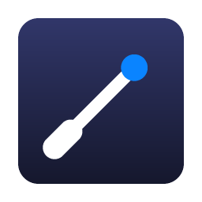

Baton
Run Maestro E2E flows for React Native apps from every git worktree at once, with no collisions.

Install
With Homebrew
Installs the app and puts the baton command on your PATH. Then open Baton from Applications once: macOS asks before running an app downloaded from the internet, and baton waits for that.
Or download
- Download the DMG with the button above.
- Open it, accept the licence, and drag Baton to Applications.
- Open Baton and click Open if macOS asks. It lives in the menu bar, not the Dock.
- From the menu bar icon, choose Install 'baton' Command… to put
batonon your PATH.
Either way, Baton updates itself, and only when no test run is in progress.
To remove it, run brew uninstall --zap --cask baton, or see uninstalling and troubleshooting.
Get started
From your React Native project:
Let your AI agents run flows too:
Why Baton
- A Metro per worktreeEvery worktree gets its own port, so no simulator loads another branch's code.
- Its own devicesDedicated simulators and emulators, checked to load the right bundle before any flow runs.
- Queued, not failedRuns wait for free devices instead of fighting over them.
- Built onceApp builds are cached by native fingerprint; JS-only branches never rebuild.
- Agent-readyOne MCP call runs the flows and returns results and screenshots.
- Watch it liveA menu bar dashboard with progress, screenshots, logs and a live device grid.
Requirements
macOS with Xcode and an iOS simulator runtime · Maestro 2.11+ and Java · a bare React Native or Expo dev-client app · for Android, the Android SDK with an arm64 system image.
Learn more
Enjoying Baton?
Baton is free. If it saves you time, consider buying me a coffee.